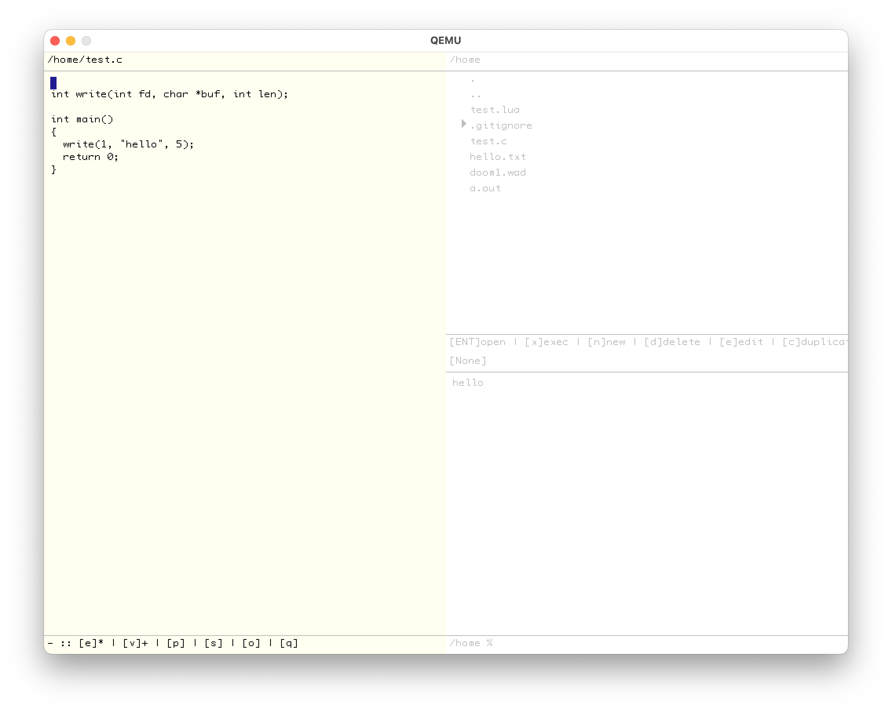

Mako is an operating system for 32-bit x86-compatible computers. Among its features are:

Mako is named after the mako shark, the fastest shark in the sea. The shortfin mako shark is classified as an endangered species by the IUCN -- learn more about shark conservation here.
'Mako' is also the name of the fictional source of energy from Final Fantasy VII.
Download mako.iso and mako-hda.img from here.
This build process has been tested on macOS and Arch Linux. It should work on most Linux-like platforms. If you have trouble building Mako, please reach out to me or raise an issue on this repository.
Steps:
i386-elf platform. This is the hardest and most time consuming step -- if you can find precompiled binaries of i386-elf-gcc and binutils for your platform, save yourself the effort and use them instead of building GCC from source. If you are building on macOS, use this Homebrew tap and skip step 2. After this is complete, you should have i386-elf versions of GCC and binutils:$ i386-elf-gcc --version
i386-elf-gcc (GCC) 9.2.0
Copyright (C) 2019 Free Software Foundation, Inc.
This is free software; see the source for copying conditions. There is NO
warranty; not even for MERCHANTABILITY or FITNESS FOR A PARTICULAR PURPOSE.
$ i386-elf-ld --version
GNU ld (GNU Binutils) 2.31
Copyright (C) 2018 Free Software Foundation, Inc.
This program is free software; you may redistribute it under the terms of
the GNU General Public License version 3 or (at your option) a later version.
This program has absolutely no warranty.grub-mkrescue, which depends on xorriso and mtools to create bootable ISOs. Most (?) Linux distributions come with grub-mkrescue installed. (https://www.gnu.org/software/grub/)./fetch-deps.sh
make user # Ignore warnings
./gen-hda.sh # Ignore the segfault message
makemako.iso and hda.img disk images!Mako only works on qemu at the moment.
mako.iso and mako-hda.img disk images from the link above.# At least 64M of RAM is recommended
qemu-system-i386 -cdrom mako.iso -m 256M -drive format=raw,file=mako-hda.imgTODOs:
Long term goals:
Mako makes use of the following libraries and programs:
printf implementation by Marco Paland: https://github.com/mpaland/printfI wrote Mako to better understand how operating systems work and learnt a lot of cool stuff in the process. This project would not exist without:
All Mako source is distributed under the terms of the MIT License.